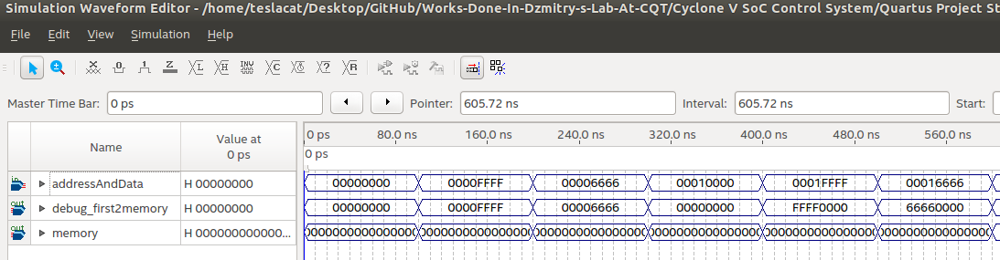

Verilog MemoryMapper¶
| Date: | 11 Oct 2019 |
|---|
What is the idea?¶
- Using many PIOs to set registers simply doesn’t make sense…
- We can use one single PIO to set \(2^{16}\) 16 bits registers
- So we have a 32 bits PIO, then we can just use first 16 bits as Address and the other 16 bits as Data
Simple MemoryMapper¶
module MemoryMapper(
input [31:0] addressAndData,
output reg [127:0] memory,
output [31:0] debug_first2memory
);
// Begin debug
assign debug_first2memory = memory[31:0];
// End debug
// Begin internal signals
wire [15:0] wire_address, wire_data;
assign wire_address = addressAndData[31:16];
assign wire_data = addressAndData[15:0];
// End internal signals
// Begin Map memory for Grouper
always @(addressAndData) begin
memory <= (memory | (128'hFFFF<<wire_address*16) )
& ({112'd0,wire_data}<<wire_address*16);
end
// End Map memory for Grouper
endmodule
/*
=============================
== Explanation
=============================
First clear the old data with a mask "FFFF" using OR
Then write in the new data "wire_data" with AND
Both "FFFF", and "wire_data" are shifted to the correct address by "<<wire_address*16"
Of course, we need to make sure everything is 128 bits
*/
